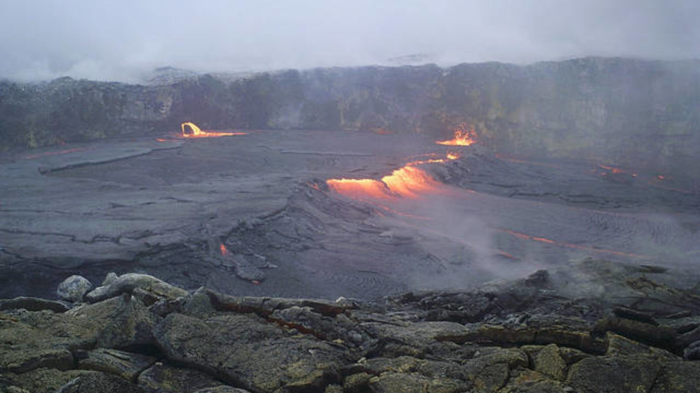
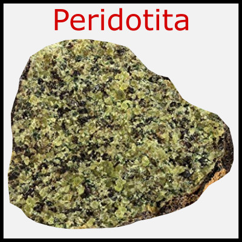
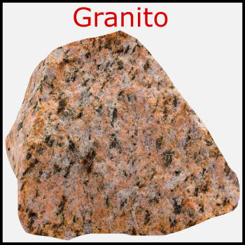
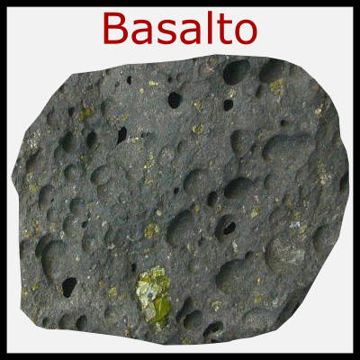
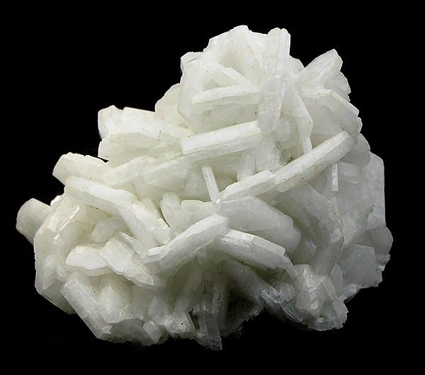
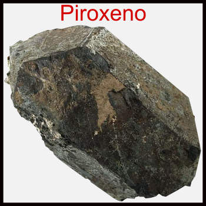
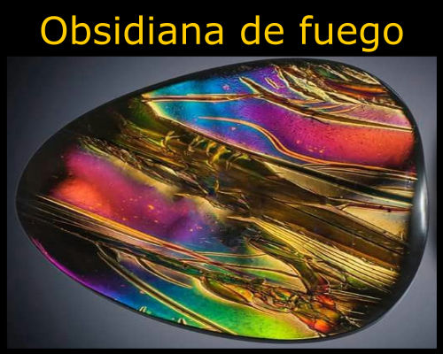
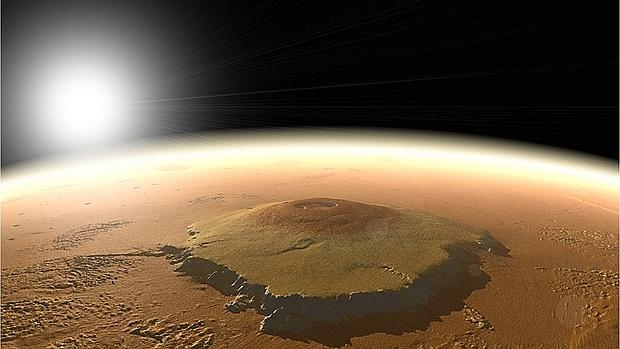
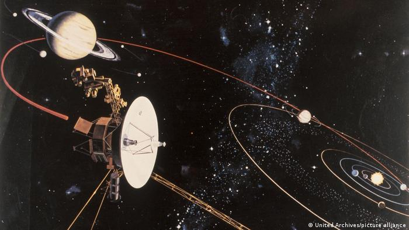

El Pu‘u ‘Ō‘ō, cono volcánico de Hawái.

El material volcánico se forma de rocas intrusivas (en el interior) y extrusivas (en el exterior):
|
Materiales |
Representación gráfica |
| Rocas intrusivas |
peridotita (Au, Ag, Pt, Ni y Pb) y granito que posee Cuarzo (SiO2), Mica(SiAlx) y olivino
(FeOx). |

 |
| Rocas extrusivas |
basalto, que tiene feldespato (KALSi3O4), plagioclasas (CaAl2SI2O8), piroxeno (Si-XOH) y
magnetita Obsidiana: KAlSi3O4 y SiO2 |



 |
Monte Olimpo, el volcán más grande del Sistema Solar situado en el planeta Marte.
La Tierra no es el único planeta del Sistema Solar que tiene actividad volcánica. Venus tiene un intenso
vulcanismo con unos cientos de miles de volcanes. Marte tiene la cumbre más alta del sistema solar: el Monte
Olimpo, un volcán dado por apagado con una base de unos 600 km y más de 27 km de altura. No obstante, este
planeta parece tener cierta actividad volcánica apreciable.4

Nuestra Luna está cubierta de inmensos campos de basalto, lo que sugiere que tuvo una corta pero considerable
actividad volcánica que hoy muy probablemente está extinta.
Debido a las bajas temperaturas del espacio, algunos volcanes de nuestro sistema solar están formados de hielo
que actúa como roca, mientras su agua líquida interna actúa como la magma; esto ocurre -por ejemplo- en la fría
luna de Júpiter llamada Europa. Estos reciben el nombre de criovolcán, de los cuales hay también en Encélado. La
Voyager 2 descubrió en agosto de 1989, sobre Tritón, rastros de criovulcanismo y géiseres. La búsqueda de vida
extraterrestre se ha interesado en buscar rastros de vida en sistemas criovolcánicos donde hay agua líquida y
por ende, una fuente de radiación en calor considerable; estos son elementos esenciales para la vida.
Existen volcanes un poco más similares a los terrestres, sobre otros satélites de Júpiter como en el caso de Ío.
La sonda Voyager 1 permitió fotografiar en marzo de 1979 una erupción en Ío. Los astrofísicos estudian los datos
de esta información, que extiende el campo de estudio de la vulcanología. El conocimiento del fenómeno tal como
se produce sobre la Tierra pasa en adelante por su estudio en el espacio.
La temperatura y composición química de los volcanes del sistema solar varían considerablemente entre los
planetas y los satélites. Además, el tipo de materiales que arrojan en sus erupciones es muy diferente de los
arrojados en la Tierra.
